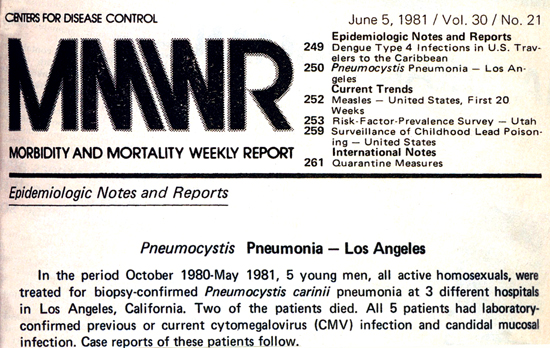
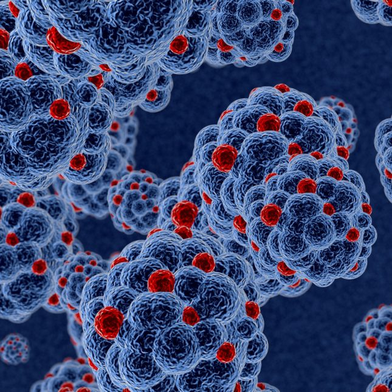
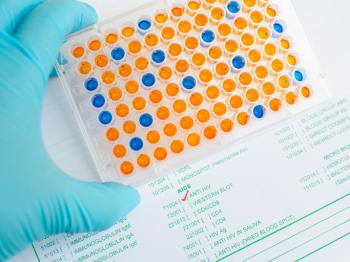
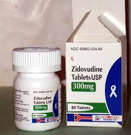
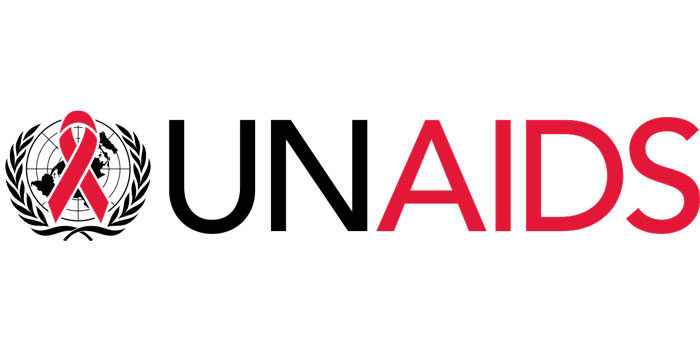
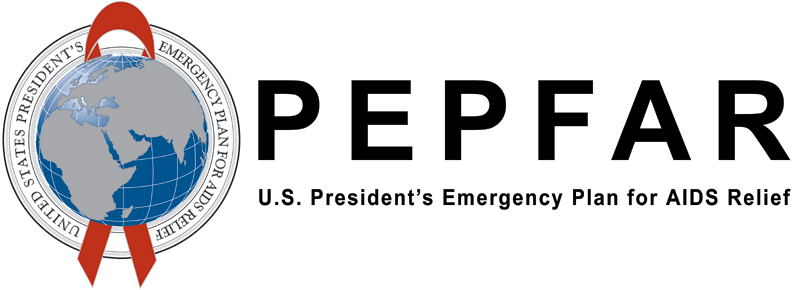
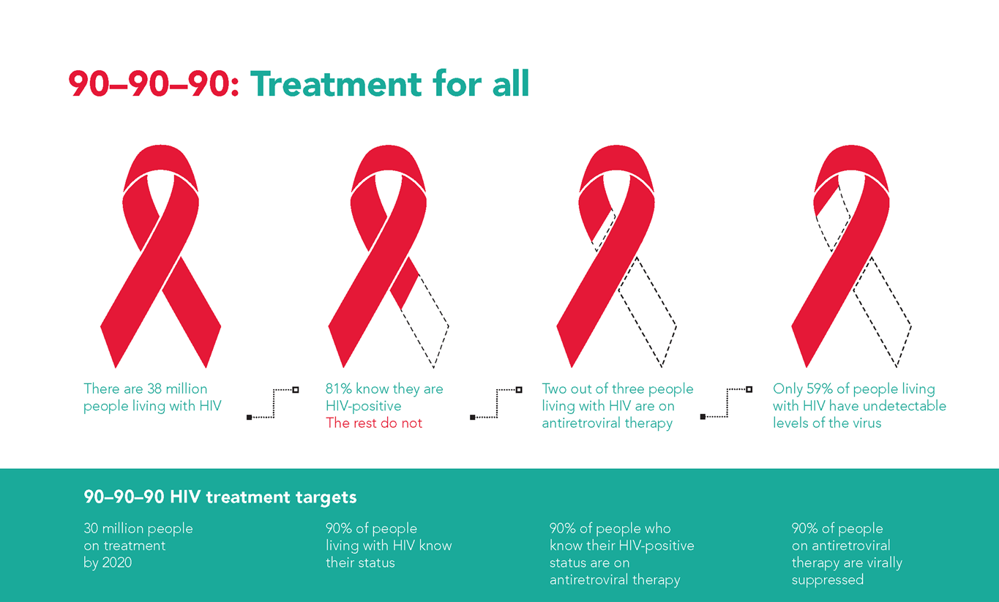

HIV/AIDS Timeline
Below is a timeline of major events of the HIV/AIDS pandemic, which is useful for contextualizing our subsequent assessment of major trends and our regression analysis.
hiv_data <- data.frame(
described = c("The first cases of HIV/AIDS are reported in the United States, though at the time they were only known as cases of Pneumocystis pneumonia of unknown etiology. The cases are primarily seen in homosexual men, but soon cases spread to other groups.",
"Cases of HIV/AIDS are reported in other countries, including France, Canada, Spain, the United Kingdom, Italy and Australia. Most of these cases are seen in homosexual men.",
"The first HIV tests are developed, allowing for more widespread testing and diagnosis of the disease. The very first test is an ELISA test approved in the U.S.",
"Dr. Robert Gallo identifies a retrovirus subsequently named human immunodeficiency virus (HIV) as the probable cause of AIDS.",
"The first international conference on HIV/AIDS is held in Atlanta, Georgia, bringing together scientists and policymakers from around the world to discuss the latest research and strategies for addressing the epidemic.",
"The World Health Organization (WHO) establishes the Global Programme on AIDS (GPA) to coordinate the global response to the HIV/AIDS epidemic.",
"The first HIV/AIDS drug, AZT (zidovudine), is approved by the US Food and Drug Administration (FDA) as an antiretroviral therapy.",
"Highly active antiretroviral therapy (HAART) is developed, which significantly improves the survival rates of people with HIV/AIDS.",
"The Joint United Nations Programme on HIV and AIDS (UNAIDS) is established as the successor to the UN Global Programme on AIDS. UNAIDS becomes the main advocate for coordinated and comprehensive global action on HIV/AIDS.",
"The first international conference on HIV/AIDS in Africa is held in South Africa, bringing attention to the high rates of HIV/AIDS in African countries.",
"The UN General Assembly Special Session on HIV/AIDS is held, resulting in the adoption of the Declaration of Commitment on HIV/AIDS, which sets targets for reducing the impact of the HIV/AIDS epidemic.",
"The U.S. Congress authorizes PEPFAR (President's Emergency Plan for AIDS Relief), which commits tens of billions of U.S. dollars to fighting HIV/AIDS globally. This is by far the largest commitment by any nation for an international health initiative. PEPFAR is credited with saving over 20 million lives.",
"The number of new HIV infections and deaths begins to decline globally, due in large part to increased access to HIV testing and treatment.",
"The World Health Organization (WHO) launches the 90-90-90 campaign, which aims to diagnose 90% of all HIV-positive people, provide antiretroviral therapy to 90% of those diagnosed, and achieve viral suppression in 90% of those on treatment.",
"Although progress has been made in treating and preventing HIV/AIDS, the disease remains a global pandemic. According to UNAIDS, an estimated 650,000 people died from AIDS-related illnesses in 2021 and 40.1 million people have died since the start of the pandemic."),
title = c("June 5, 1981: The first cases of AIDS are reported",
"1981-1982: More cases reported across globe",
"1983: HIV tests are developed",
"April 1984: Cause of AIDS discovered",
"April 1985: First international AIDS conference",
"1986: WHO establishes Global Programme on AIDS",
"March 1987: First HIV/AIDS drug approved",
"1990s: Highly active antiretroviral therapy is developed",
"1994: UNAIDS is established",
"July 2000: First international AIDS conference in Africa",
"June 2001: The UN General Assembly Special Session on HIV/AIDS",
"2003: PEPFAR launches",
"2000s: New HIV infections and deaths globally begin to decline",
"2014: WHO launches 90-90-90 campaign",
"Today"),
images = c("images/1981.jpg", "images/1982.jpg", "images/1983.jpg", "images/1984.jpg", "images/1985.jpg", "images/1986.png","images/1987.jpg", "images/1990s.jpg", "images/1994.jpg", "images/2000.png", "images/2001.jpg", "images/2003.jpg", "images/2000s.jpg", "images/2014.png", "images/hiv.jpg"),
blank = c("", "", "", "", "", "", "", "", "", "", "", "", "", "", "")
)
create_tml_img(df = hiv_data,
open = TRUE,
smr = "title",
dsc = "described",
smr_bgcol = "pink",
dsc_col = "black",
dsc_bgcol = "white",
imgsrc = "images",
imgalt = "blank",
imgwidth = "300px",
imgheight = "250px",
dsc_size = "15px")June 5, 1981: The first cases of AIDS are reported
The first cases of HIV/AIDS are reported in the United States, though at the time they were only known as cases of Pneumocystis pneumonia of unknown etiology. The cases are primarily seen in homosexual men, but soon cases spread to other groups.
1981-1982: More cases reported across globe
Cases of HIV/AIDS are reported in other countries, including France, Canada, Spain, the United Kingdom, Italy and Australia. Most of these cases are seen in homosexual men.
1983: HIV tests are developed
The first HIV tests are developed, allowing for more widespread testing and diagnosis of the disease. The very first test is an ELISA test approved in the U.S.
April 1984: Cause of AIDS discovered
Dr. Robert Gallo identifies a retrovirus subsequently named human immunodeficiency virus (HIV) as the probable cause of AIDS.
April 1985: First international AIDS conference
The first international conference on HIV/AIDS is held in Atlanta, Georgia, bringing together scientists and policymakers from around the world to discuss the latest research and strategies for addressing the epidemic.
1986: WHO establishes Global Programme on AIDS
The World Health Organization (WHO) establishes the Global Programme on AIDS (GPA) to coordinate the global response to the HIV/AIDS epidemic.
March 1987: First HIV/AIDS drug approved
The first HIV/AIDS drug, AZT (zidovudine), is approved by the US Food and Drug Administration (FDA) as an antiretroviral therapy.
1990s: Highly active antiretroviral therapy is developed
Highly active antiretroviral therapy (HAART) is developed, which significantly improves the survival rates of people with HIV/AIDS.
1994: UNAIDS is established
The Joint United Nations Programme on HIV and AIDS (UNAIDS) is established as the successor to the UN Global Programme on AIDS. UNAIDS becomes the main advocate for coordinated and comprehensive global action on HIV/AIDS.
July 2000: First international AIDS conference in Africa
The first international conference on HIV/AIDS in Africa is held in South Africa, bringing attention to the high rates of HIV/AIDS in African countries.
June 2001: The UN General Assembly Special Session on HIV/AIDS
The UN General Assembly Special Session on HIV/AIDS is held, resulting in the adoption of the Declaration of Commitment on HIV/AIDS, which sets targets for reducing the impact of the HIV/AIDS epidemic.
2003: PEPFAR launches
The U.S. Congress authorizes PEPFAR (President's Emergency Plan for AIDS Relief), which commits tens of billions of U.S. dollars to fighting HIV/AIDS globally. This is by far the largest commitment by any nation for an international health initiative. PEPFAR is credited with saving over 20 million lives.
2000s: New HIV infections and deaths globally begin to decline
The number of new HIV infections and deaths begins to decline globally, due in large part to increased access to HIV testing and treatment.
2014: WHO launches 90-90-90 campaign
The World Health Organization (WHO) launches the 90-90-90 campaign, which aims to diagnose 90% of all HIV-positive people, provide antiretroviral therapy to 90% of those diagnosed, and achieve viral suppression in 90% of those on treatment.
Today

Although progress has been made in treating and preventing HIV/AIDS, the disease remains a global pandemic. According to UNAIDS, an estimated 650,000 people died from AIDS-related illnesses in 2021 and 40.1 million people have died since the start of the pandemic.